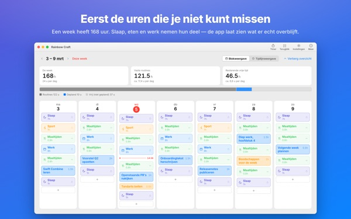
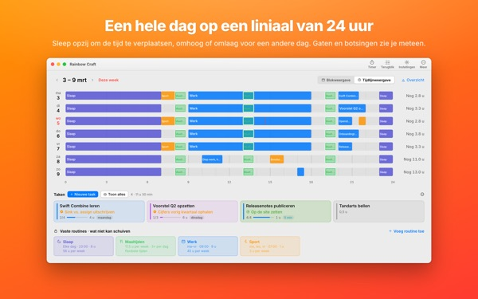
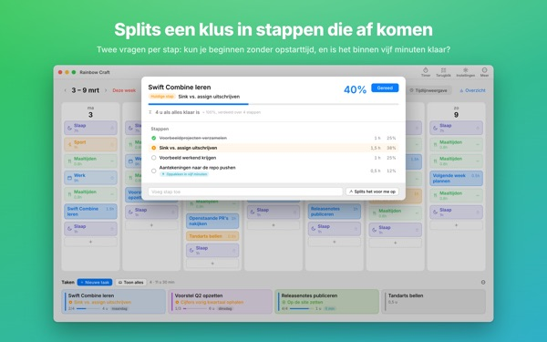
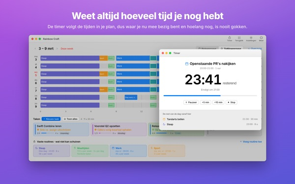
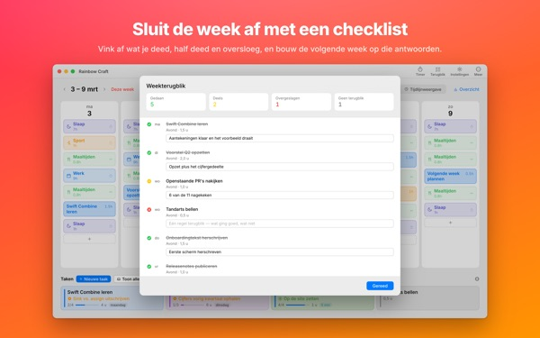

Past dit echt allemaal
in deze week?
Rainbow Craft legt je week op de Mac uit per dag en per uur. Begin met de tijd die vastligt, zoals slaap, maaltijden en werk, sleep taken naar de gaten die overblijven en zie wat er echt in past.
Plannen, routines, taken, terugblik, timer en agenda-import zijn gratis.

Plan hier een week
We hebben de vier routines klaargezet die de app bij de eerste start voorstelt. Zet ze aan en uit en leg taken op de dagen.
De lijst groeit. De week niet.
Een takenlijst vertelt je niet of je week het allemaal aankan. Als slaap, eten en reistijd hun deel hebben genomen, blijft er minder over dan je denkt. Rainbow Craft laat die uren zien in cijfers en vakjes, en laat je elke taak uitproberen op een echte plek.
Een dag op een liniaal van 24 uur
De tijdlijnweergave legt een dag op een liniaal van 24 uur. Gaten en overlappingen zie je meteen, en jij kiest hoe overlappende afspraken naast elkaar staan.
Haal vergaderingen en afspraken uit Agenda op je Mac in plaats van ze dubbel te typen. Als je wilt, gaan je plannen ook naar een aparte Rainbow Craft-agenda die je op je iPhone ziet. Je andere agenda’s blijven onaangeroerd.

Grote klussen opdelen in stappen die af komen
Grote klussen lopen vast als er nog iets in de weg zit. De app stelt bij elke stap twee vragen: kun je zonder aanloop beginnen? Is het in vijf minuten klaar?
Wat aan allebei voldoet, is een brokje voor elk gat van vijf minuten. De rest vraagt geplande tijd. Zit de app ernaast, dan beslis jij.

Waar je mee bezig bent, en hoelang nog
Op de starttijd springt een plan op bezig, en als de tijd om is vraagt de app of je klaar bent. De timer volgt je planning.
De Nu-timer-widget toont waar je mee bezig bent en hoeveel tijd er over is, zonder de app te openen.

Sluit de week af met een checklist
De weekterugblik is één kaart per dag. Vink aan wat gedaan, half gedaan of overgeslagen is, en gebruik dat voor de volgende week.
Met hetzelfde iCloud-account gaan taken heen en weer tussen deze app en Rainbow of Desire op de iPhone, dus de dag die je op de Mac plande gaat met je mee.

In drie stappen aan de slag
- 1
Leg de vaste uren vast
Wat elke week terugkomt, zoals slapen, eten en werken, zet je als routine. De app vult niets voor je in.
- 2
Schrijf je taken op
Eén per regel onder Taken, onderaan. Wanneer je ze doet, hoef je nog niet te weten.
- 3
Sleep ze naar dagen
Op een dag gezet, wordt het een plan. Schuift de datum? Sleep hem naar een andere dag of terug naar de lijst.
De rekensom met de voorgestelde routines
- Een week
- 168 uur
- Slaap · 8 uur per dag
- 56 uur
- Maaltijden · drie per dag
- 17,5 uur
- Werk · school · 9 uur op werkdagen
- 45 uur
- Sport · 1 uur ma, wo, vr
- 3 uur
- Tijd die je deze week echt hebt
- 46,5 uur
Dit zijn maar voorstellen. Kies en pas de routines aan op je eigen leven. Op een vrije dag of reisdag haal je het werk alleen voor die dag weg.
Alles wat je nodig hebt om deze week te leven is gratis
Gratis
- Week- en dagplannen, routines en taken zonder limiet
- Tijdlijnweergave en opdelen in stappen
- Weekterugblik, ook te kopiëren als tekst
- Timer en Nu-timer-widget
- Agenda-import
- Synchronisatie met Rainbow of Desire op de iPhone
- Trends van de laatste 2 weken
Plus · Pro
- Plus: 8 weken trends, je beste dagen en tijden
- Plus: plan en werkelijkheid naast elkaar
- Plus: het plan van een goede week in één keer overnemen
- Pro: alles van Plus, plus je planning delen via een alleen-lezen-link
- Pro: één aankoop ontgrendelt Pro ook in de iPhone-app
Elk niveau als jaarabonnement of eenmalige aankoop voor altijd
Prijzen zie je in de app en in de App Store. Het jaarabonnement wordt automatisch verlengd, tenzij je het uiterlijk 24 uur voor het einde van de periode opzegt. Pro gekocht op de iPhone werkt ook op een Mac met hetzelfde iCloud-account.
Veelgestelde vragen
Moet ik ingelogd zijn bij iCloud?
Niet als je alleen op de Mac plant. Je hebt het nodig om met je iPhone te synchroniseren en om je planning te delen.
Past de app mijn agenda’s aan?
Je bestaande agenda’s worden nooit gewijzigd. De import leest alleen de agenda’s die je kiest. Zet je het schrijven naar de Rainbow Craft-agenda aan, dan maakt de app die aparte agenda en schrijft alleen daarin. Je kunt hem altijd verwijderen in de Agenda-app.
Taken van de Mac verschijnen niet op de iPhone.
Controleer of beide apparaten hetzelfde iCloud-account gebruiken en of Rainbow of Desire op de iPhone staat. Synchroniseren gaat via iCloud en kan een paar minuten duren.
Sluit de app als ik het venster sluit?
Nee. De app blijft draaien. Open het venster opnieuw via het menu Venster of door op het Dock-symbool te klikken.
Wat gebeurt er met mijn taken en plannen bij een update?
Die blijven precies zoals ze zijn. Updates veranderen of wissen niets van wat je hebt geschreven.
Hoe verander ik de taal van de app?
Kies helemaal bovenaan in Instellingen bij Language · 언어 · 語言, dan opent de app opnieuw in die taal. Er zijn 23 talen. Zelf ingevoerde routinenamen en taken worden niet vertaald.
Nieuwe Mac en Plus of Pro is weg.
Log in met hetzelfde Apple Account en klik in Instellingen op Herstel aankoop. Opzeggen doe je via je accountinstellingen in de App Store.
Waar blijft wat ik schrijf?
Geen account, geen registratie en geen server van de ontwikkelaar met je plannen. Wat je schrijft blijft op je apparaten en in je eigen iCloud. De app stuurt anonieme gebruiksgegevens zonder je inhoud, en die zet je uit in Instellingen met Stuur anonieme gebruiksstatistieken.
Loop je vast of klopt er iets niet? Mail naar mizzking75@gmail.com. Ook in de instellingen van de app vind je een contactmogelijkheid.